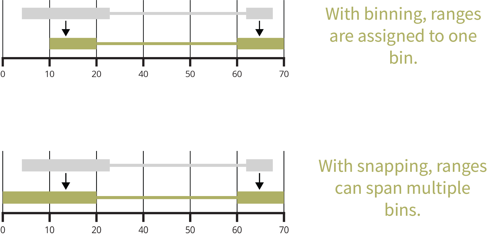
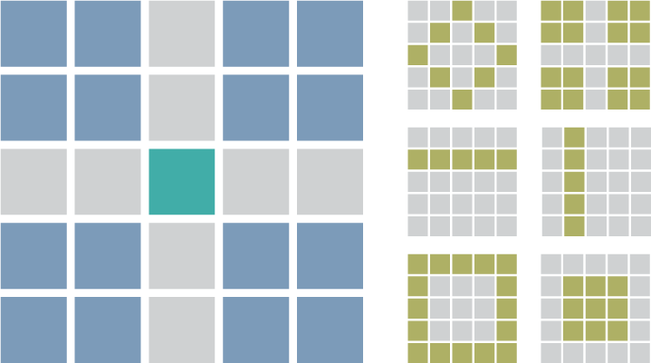

Why mariner?
Disruption or aberrant formation of chromatin interactions can result in developmental abnormalities and disease. Therefore, deriving biological insights from 3D chromatin structure experiments, such as Hi-C or Micro-C, is essential for understanding and correcting human disease.
mariner is an R/Bioconductor package for exploring Hi-C data. It enables users to flexibly manipulate, extract, and aggregate chromatin interaction data quickly and efficiently.
One ecosystemmariner extends common Bioconductor classes, leveraging the thousands of existing tools for analyzing and visualizing genomic data.
Modular designmariner’s functions can be combined and chained in various ways to produce custom workflows.
Fast and efficientmariner leverages HDF5 to store large results and uses block processing to minimize hardware requirements.
Key features
Manipulating Paired Ranges
Convert, bin, and shift paired genomic ranges 
Clustering & Merging Interactions
Group nearby interactions and select one as representative 
Extracting & Aggregating Interactions
Pull Hi-C pixels or matrices, then aggregate by files or interactions 
Calculating Loop Enrichment
Determine loop enrichment to local background with selection functions to flexibility select foreground and background. 
Installation
This package can be installed through Bioconductor:
if (!require("BiocManager", quietly = TRUE))
install.packages("BiocManager")
BiocManager::install("mariner")Or the development version can be installed via GitHub:
if (!requireNamespace("remotes", quietly = TRUE))
install.packages("remotes")
remotes::install_github("EricSDavis/mariner")Contributing
This outlines how to propose a change to mariner. (Template adapted from tidyverse contribution guide).
Setting up the development environment
Every push to the dev or main branch of this repository builds and pushes a development container to dockerhub with mariner and its dependencies pre-installed. If you don’t have docker, follow the installation instructions at https://www.docker.com/. Follow the steps below to set up a reproducible development environment:
-
In the terminal, clone this repository:
git clone https://github.com/EricSDavis/mariner -
Pull the latest image development image from dockerhub:
docker pull ericsdavis/r-mariner -
Run the container:
docker run \ --name mariner \ -e PASSWORD=bioc \ -p 8787:8787 \ -v "$(pwd)/mariner:/home/rstudio/mariner" \ ericsdavis/r-mariner:latestThen navigate to localhost:8787 and sign into RStudio with username=rstudio and password=bioc.
Alternatively, this
docker-compose upcan be run with thisyamlfile:services: mariner-devel: container_name: mariner-devel image: "ericsdavis/r-mariner" ports: - "8787:8787" environment: - PASSWORD=bioc volumes: - type: bind source: ./mariner target: /home/rstudio/mariner
Fixing typos
You can fix typos, spelling mistakes, or grammatical errors in the documentation directly using the GitHub web interface, as long as the changes are made in the source file. This generally means you’ll need to edit roxygen2 comments in an .R, not a .Rd file. You can find the .R file that generates the .Rd by reading the comment in the first line.
Bigger changes
If you want to make a bigger change, it’s a good idea to first file an issue and make sure someone from the team agrees that it’s needed. If you’ve found a bug, please file an issue that illustrates the bug with a minimal reprex (this will also help you write a unit test, if needed).
Pull request process
Fork the package and clone onto your computer. If you haven’t done this before, we recommend using
usethis::create_from_github("EricSDavis/mariner", fork = TRUE).Install all development dependences with
devtools::install_dev_deps(), and then make sure the package passes R CMD check by runningdevtools::check(). If R CMD check doesn’t pass cleanly, it’s a good idea to ask for help before continuing.Create a Git branch for your pull request (PR). We recommend using
usethis::pr_init("brief-description-of-change").Make your changes, commit to git, and then create a PR by running
usethis::pr_push(), and following the prompts in your browser. The title of your PR should briefly describe the change. The body of your PR should containFixes #issue-number.For user-facing changes, add a bullet to the top of
NEWS.md(i.e. just below the first header). Follow the style described in https://style.tidyverse.org/news.html.
Code of Conduct
Please note that the mariner project is released with a Contributor Code of Conduct. By contributing to this project you agree to abide by its terms.